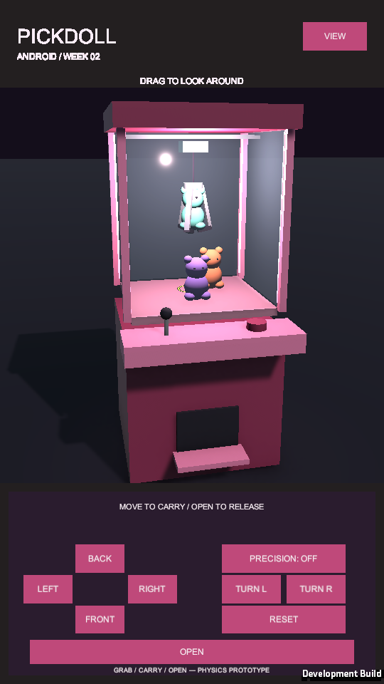
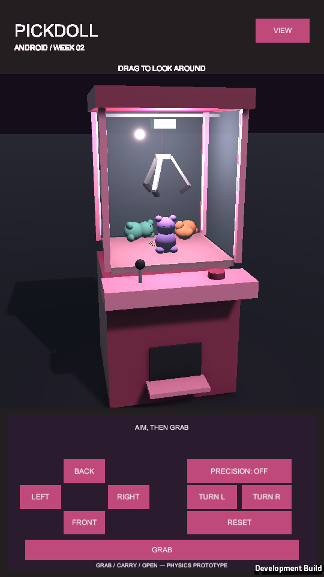

집고, 들어 올리고,
옮긴 뒤 놓기.
관절·충돌·마찰로 인형을 집는 2주차 물리 프로토타입.
구현 내용
실제 접촉으로 집기
- 세 손가락의 Rigidbody·HingeJoint와 안쪽 고무 받침
- 100g 임시 인형 3개의 동적 Rigidbody와 몸통·머리·발 충돌체
- 하강 → 닫힘 → 상승 → 운반 → 열기 상태 전환
- 운반 중 방향 이동과 회전, OPEN 후 중력으로 낙하
- 동작 중 RESET으로 집게와 인형 초기화
결과를 강제하지 않는 물리
인형을 집게에 부모 연결하거나 고정 조인트로 붙이지 않는다. 자석처럼 끌어당기거나 실패 시 강제로 떨어뜨리는 동작도 넣지 않았다.
집게 관절의 스프링, 인형 질량, 접촉 모양과 마찰이 결과를 결정한다. 힘이 약해도 손가락에 걸리거나 받쳐지면 유지될 수 있다.
실행 화면


검증 결과
| 항목 | 확인 결과 |
|---|---|
| 보통 힘 / 정렬한 집기 3회 | 3개 모두 root 높이 약 1.20 → 1.61. Unity 월드 좌표에서 약 0.41 상승 |
| 기본 속도 운반 | 세 인형 각각 약 0.192 / 0.180 / 0.193 수평 이동 후에도 지지 유지 |
| 집게 열기 | 3회 모두 바닥으로 낙하. 최종 root 높이 약 1.185 / 1.185 / 1.195 |
| 하강 중 RESET | Ready 상태와 초기 높이 복구 |
| 빈 공간 집기 | 멀리 있는 인형이 들어 올려지지 않음 |
| 약한 힘 관찰 | 한 비교 조건에서 높이 1.461 관찰. 특정 높이·낙하·실패를 합격 조건으로 요구하지 않음 |
| Android APK | 생성 완료 · 40.1 MiB |
| 실기기 | 갤럭시 탭 SM-X820에 APK 설치 Success, 런처 실행 완료. APK v2 서명 검증 통과. 실제 터치 집기·운반·놓기와 장시간 동작은 사용자 확인 전이다. |
위 수치는 지정된 초기 배치와 조준 조건의 검사 결과다. 실제 플레이 승률이나 모든 조준 오차·입력 조합의 성공을 뜻하지 않는다. 게임은 강체와 단순 충돌체를 사용하며 연체 인형 변형은 구현하지 않았다.
Windows 실행 검사 원문
PASS trial 0: held=True, liftedY=1.612, carry=0.192, angles=-23.4,-20.9,-21.4 released=True, releasedY=1.185 trial 1: held=True, liftedY=1.613, carry=0.180, angles=-22.2,-21.0,-21.5 released=True, releasedY=1.185 trial 2: held=True, liftedY=1.613, carry=0.193, angles=-22.3,-20.4,-20.7 released=True, releasedY=1.195 reset_during_cycle=True weak_grip_observation: height=1.461; normal_average=1.613; no required slip/drop outcome empty_grab_did_not_lift=True
실행과 조작
방향 버튼 또는 방향키로 조준한 뒤 GRAB / Enter / Space를 누른다. 자동으로 내려가서 닫고 올라온 후 방향 버튼으로 운반한다. OPEN / Enter / Space를 누르면 놓는다. PRECISION / Shift는 저속, TURN / Z·X는 회전, RESET / R은 초기화다.
PC: Unity/Builds/Week02/Windows/PickDoll.exe
Android: Unity/Builds/Week02/Android/PickDoll-week02.apk
Unity 씬: Assets/PickDoll/Scenes/Week02.unity
APK SHA-256: 4e7737e5f405b02eafcd20eec6666bb9d0dcc92a9d1396519ebe9827209f2948
빌드·검증 방법: Unity/tools/Run-Unity.ps1 -Week 2 -Task Validate|Windows|Android. 바이너리와 검사 로그는 로컬 생성물이다.
현재 범위와 남은 사항
- 자동 하강·닫힘·상승 중 수평 이동은 현재 제한된다. 하강 중 이동 허용은 아래 후속 피드백으로 관리한다.
- 현재 회전 버튼이 남아 있고, 집게 몸체의 위치·회전은 모터 목표로 제어한다. 매달린 집게 전체의 수동 회전·큰 관성 흔들림은 후속 작업이다.
- 인형은 임시 곰 3개다. 형태별 다양화, 최종 재질·조명·소리 연출은 후속 주차다.
- 수집함 통로·획득 판정·누적 저장은 아직 없다. OPEN으로 인형을 플레이 바닥에 놓는다.
- 그립 강도는 조정 가능한 물리 설정이다. 현재 일반 플레이에 무작위 약한 집게 비율을 적용하지 않았다.
- 1주차에 관찰한 AssetPackManager 클래스 누락 시작 로그는 공개 출시 전 재검증 대상이다. 이번 설치 성공만으로 해결됐다고 판단하지 않는다.
- 장시간 발열·정량 프레임률과 모든 기기의 집기 결과는 별도 검증 대상이다.
3주차 착수 전 리마인드
사용자가 3주차 작업을 요청하면 이 대화에서 먼저 아래 네 피드백을 다시 짚고 적용 범위를 정한다. 날짜 알림 대신 작업 착수 시점의 확인 항목으로 합의했다.
- 하강 중에도 좌우·앞뒤 이동을 허용한다.
- 수동 회전 제어를 없애고 이동 관성에 따른 회전·흔들림을 구현한다. 원형 이동으로 원형 흔들림이 커질 수 있고, 입력을 멈추면 감쇠하도록 한다.
- 실제 집게 디자인을 조사해 투박한 형태를 개선한다. 가는 손가락·곡선형 끝단·중앙 하우징과 관절 표현을 검토한다.
- 벽·모서리 인형 집기를 개선한다. 이동 범위와 벽 충돌, 손가락별 반응을 확인하고 네 모서리·네 벽 근처에서 검증한다.
그다음 전체 계획의 배출구·획득 판정과 자동 사이클을 진행한다. 피드백의 실제 적용 시점·작업량은 3주차 착수 때 조정한다.